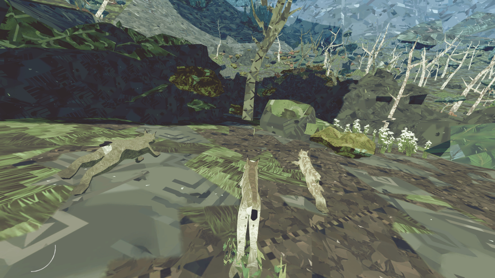
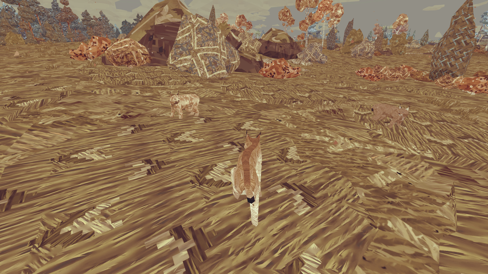

Goodbey My Children


After winter. They have grown up so they need free.I always know one day they will leave me. But I don't know that's
today.Happening without warning!
I can't restrain them from going their own way because I love them, but I can't stop myself to chasing them.
I'm old so that I can't run as fast as before. What I can do is looking their back become smaller and smaller.Run!My children.Run! And goodbye.